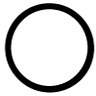

Creating tasks
Tasks on the tablet are written in Javascript. Typically, one of two methods are used:
- Simple tasks use a Questionnaire object and its elements (described below) to capture user responses.
- Complex tasks use a webview and HTML/Javascript combinations to create arbitrarily complex animations.
Third-party libraries can be used; for example, the Raphaël library is an easy way to create animations.
Questionnaire elements
Programmers can embed arbitrary logic in a task. Several elements are available.
Display
These elements are primarily for static display (though, for example, the programmer can manipulate the contents of static text dynamically).
- QuestionAudioPlayer. Allows sounds to be played.
- QuestionHeading. Displays headings.
- QuestionHorizontalRule. A horizontal rule or line.
- QuestionImage. A static image.
- QuestionSpacer. Vertical space.
- QuestionText. Static text.
User input
- QuestionBooleanImage. An image/picture associated with a Boolean (0/1/NULL) variable. The Boolean variable is displayed with an associated widget.
- Unselected:
- Unselected and required:

- False:
 or
or
- True:
 or
or
- QuestionBooleanText. Text associated with a Boolean variable, with widgets as for QuestionBooleanImage.
- QuestionBooleanTextButton. Text associated with a Boolean variable, with text as buttons:
- Unselected:
XXX
- Unselected and required:
XXX
- False:
XXX
- True:
XXX
- QuestionButton. A button, used to execute arbitrary code.
- QuestionCanvas. A canvas for sketching, which can take a default or background image.
- QuestionCountdown. A countdown timer.
- QuestionDateTime. Date/time input method, using the device’s widget (e.g. spinner, calendar).
- QuestionDiagnosticCode. Allows searching and selection of diagnostic codes using a recognized system (e.g. ICD-10).
- QuestionMCQ. A simple 1-from-many or multiple-choice question (MCQ), with a range of layout and visual options.
- Unselected: 
- Unselected and a response is required:
- Selected:
or
- Unselected:
XXX
- Unselected and a response is required:
XXX
- Selected:
XXX
- QuestionMCQGrid. An MCQ specialized to operate in a grid, with lots of questions having a common set of possible answers.
- QuestionMCQGridDouble. A specialized MCQ with a double grid (lots of questions having a common pair of sets of possible answers;
e.g. for each question, pick one from A/B/C and pick one from X/Y/Z).
- QuestionMCQGridWithSingleBoolean. Another specialized MCQ; as for QuestionMCQGrid but with an additional Boolean variable per question
(e.g. for each question, pick one of absent/mild/moderate/severe, and tick if distressing).
- QuestionMultipleResponse. An n-from-many (multiple response) question.
- Unselected:
- Unselected and more responses required:
- Selected:
or
- Unselected:
XXX
- Unselected and more responses required:
XXX
- Selected:
XXX
- QuestionPhoto. Uses the device camera to take a photo.
- QuestionPickerInline. Pick from a list of options using a spinner or similar interface.
- QuestionPickerPopup. Pick from a list of options using a pop-up selector.
- QuestionSlider. A slider, for discrete or continuous variables (which might display a number and/or text to the user).
- QuestionThermometer. A thermometer-style visual analogue scale.
- QuestionTypedVariables. User input for text (single-line or multiline), or validated numerical input (integer or floating-point, with range constraints if required).
Layout
These elements are simply for layout:
- ContainerHorizontal. Arranges other elements in a horizontal row.
- ContainerVertical. Arranges other elements in a vertical column.
- ContainerTable. Arranges other elements in a table or grid.